Learning Outcomes
This module focuses on a shortcut for constructing CIs and doing hypothesis tests for one proportion. You already know how to do these tasks using bootstrapping and randomization, but now you’ll learn a shortcut that allows you to skip the resampling. We’ll call this shortcut the Normal Model. You will use key content from previous sections, including:
- Understanding and interpretation of sampling distributions
- Using normal distributions to compute \(z^*\) values or p-values, given the standard error of the relevant sampling distribution
At the end of this module, you will:
- Be practiced at using the Normal Model for a proportion. It gives a “shortcut” formula for computing the SE for a test or CI from sample data, without resampling, when the parameter of interest is a proportion
- Be familiar with the process of constructing CIs, or finding and interpreting p-values, using this shortcut
- Be competent to estimate the sample size needed to get an estimate of a proportion to within a pre-specified margin of error
Text Book Reference
This module covers IMS Chapter 6.1, if you wish for additional reference material.
It is recommended (but not required) that you read the text book sections either before or after completing the corresponding parts of the tutorial, especially for any sections you feel less confident about.
Exploring SE for a Proportion
Text book reference: IMS Ch. 6.1.2
Central Limit Theorem
We previously encountered the Central Limit Theorem (CLT), which told us that the sampling distribution for a proportion will be normal as long as the sample size is big enough.
But…how big is big enough, for the sample size?
Let’s consider a few examples, using our old bootstrapping skills.
Normality of Sampling Dist when \(p = 0.5\)
The code below computes and displays four sampling distributions, and overlays a fitted normal distribution on each one.
For each one, the true parameter value is \(p = 0.5\).
But the sample sizes vary: 10, 25, 50, and 100.
You can click to expand the code if you want to review how it’s done, but you main goal is to see which sample sizes seem to result in a normal sampling distribution.
Show code
# note: code written for clarity, not efficiency :)
b1 <- do(1000)*rflip(n = 10, prob = 0.5)
b2 <- do(1000)*rflip(n = 25, prob = 0.5)
b3 <- do(1000)*rflip(n = 50, prob = 0.5)
b4 <- do(1000)*rflip(n = 100, prob = 0.5)
gf_dhistogram(~prop, data = b1, title = 'n = 10', binwidth = 1/10) %>%
gf_fitdistr()
gf_dhistogram(~prop, data = b2, title = 'n = 25', binwidth = 1/25) %>%
gf_fitdistr()
gf_dhistogram(~prop, data = b3, title = 'n = 50', binwidth = 1/50) %>% gf_fitdistr()
gf_dhistogram(~prop, data = b4, title = 'n = 100', binwidth = 1/50) %>% gf_fitdistr()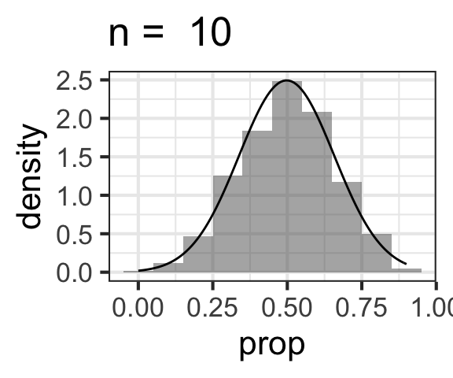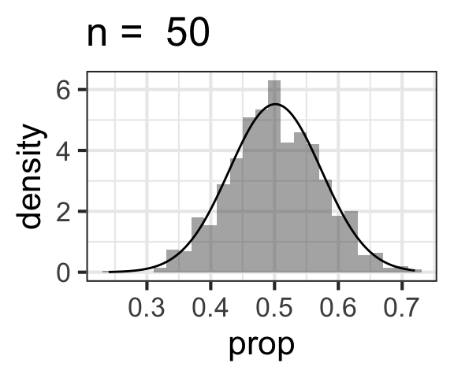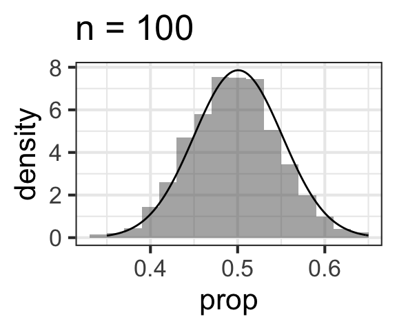
Normality of Sampling Dist when \(p = 0.07\)
All of the sampling distributions we just checked had \(p = 0.5\). Does varying the proportion matter?
Let’s repeat the same exploration, but this time with a very small \(p\) value of 0.07.
Again, the sample sizes vary: 10, 25, 50, and 100.
You can click to expand the code if you want to review how it’s done, but you main goal is to see which sample sizes seem to result in a normal sampling distribution.
Show code
# note: code written for clarity, not efficiency :)
b1 <- do(1000)*rflip(n = 10, prob = 0.07)
b2 <- do(1000)*rflip(n = 25, prob = 0.07)
b3 <- do(1000)*rflip(n = 50, prob = 0.07)
b4 <- do(1000)*rflip(n = 100, prob = 0.07)
gf_dhistogram(~prop, data = b1, title = 'n = 10', binwidth = 1/10) %>%
gf_fitdistr()
gf_dhistogram(~prop, data = b2, title = 'n = 25', binwidth = 1/25) %>%
gf_fitdistr()
gf_dhistogram(~prop, data = b3, title = 'n = 50', binwidth = 0.02) %>% gf_fitdistr()
gf_dhistogram(~prop, data = b4, title = 'n = 100', binwidth = 0.01) %>% gf_fitdistr() 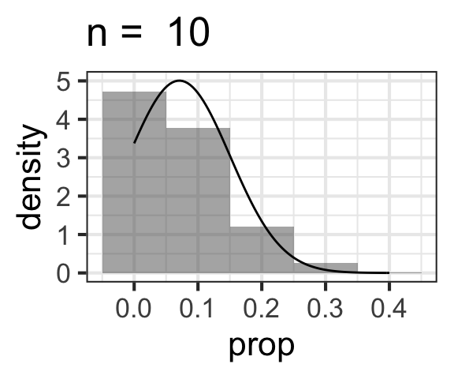 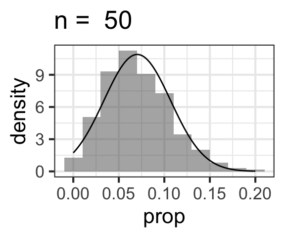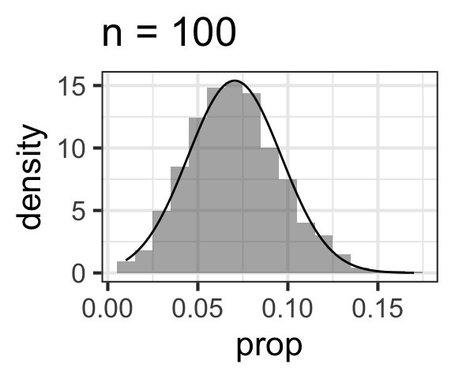
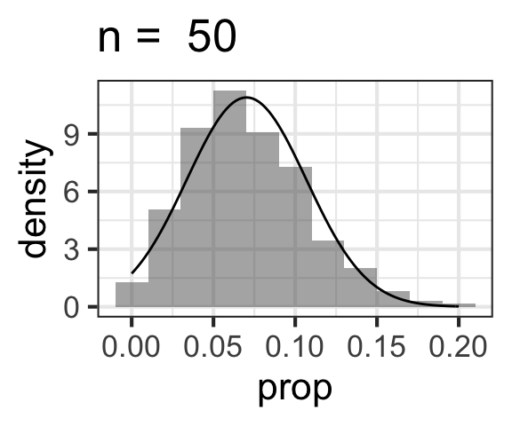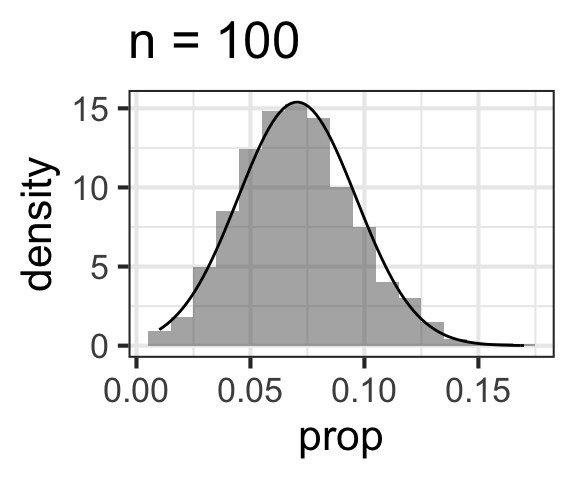
Normality of Sampling Dist when \(p = 0.88\)
All of the sampling distributions we just checked had \(p = 0.07\). Is it only small values of \(p\) that require larger samples sizes to look normal? Or will big \(p\) values have the same problem?
Let’s repeat the same exploration, but this time with a large \(p\) value of 0.88.
Notice, this \(p\) is big, but not as extreme as 0.07 – 0.07 is closer to 0 than 0.88 is to 1.
Again, the sample sizes vary: 10, 25, 50, and 100.
You can click to expand the code if you want to review how it’s done, but you main goal is to see which sample sizes seem to result in a normal sampling distribution.
Show code
# note: code written for clarity, not efficiency :)
b1 <- do(1000)*rflip(n = 10, prob = 0.88)
b2 <- do(1000)*rflip(n = 25, prob = 0.88)
b3 <- do(1000)*rflip(n = 50, prob = 0.88)
b4 <- do(1000)*rflip(n = 100, prob = 0.88)
gf_dhistogram(~prop, data = b1, title = 'n = 10', binwidth = 1/10) %>%
gf_fitdistr()
gf_dhistogram(~prop, data = b2, title = 'n = 25', binwidth = 1/25) %>%
gf_fitdistr()
gf_dhistogram(~prop, data = b3, title = 'n = 50', binwidth = 0.02) %>% gf_fitdistr()
gf_dhistogram(~prop, data = b4, title = 'n = 100', binwidth = 0.01) %>% gf_fitdistr() 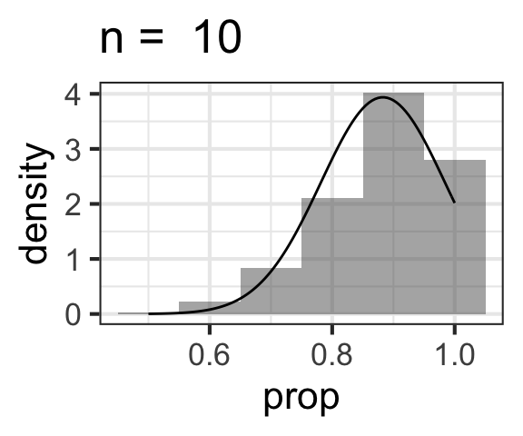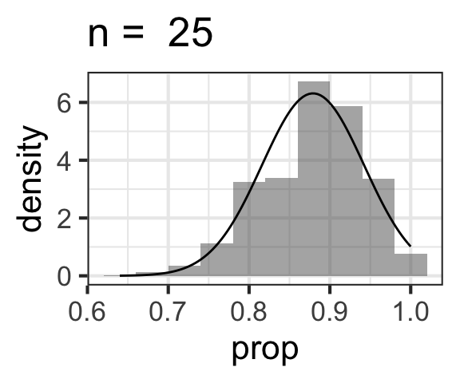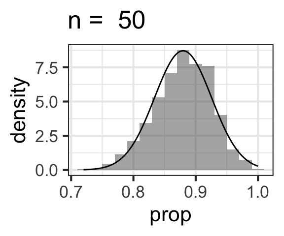
Summary: Normality of Sampling Distributions
So…what have we learned?
When the proportion \(p\) is in the middle of the range – around 0.5 – even a pretty small sample size like \(n = 10\) will result in a normal-looking sampling distribution.
But as the proportion \(p\) (and its estimate(s) \(\hat{p}\)) get closer to the boundaries of 0 and 1, you need bigger and bigger sample sizes before the sampling distribution looks normal. This is because proportions can never be less than 0 or more than 1; if \(n\) is small and there’s a lot of variation from sample to sample, it’s limited at the edge of the possible range (so with \(p \approx 0\), the sampling distribution can “spread out” toward the right but not to the left).
Rule of Thumb: Sample Size and Normality
Text book reference: IMS Chapter 6.1.2, Conditions
So, we know that the required sample size to ensure that the sampling distribution for a proportion is normal depends on the proportion – small samples sizes will do for proportions near 0.5, but not for proportions near 0 or 1.
A handy rule of thumb says:
If \(np \geq 10\) and \(n(1-p) \geq 10\), the sampling distribution will be normal.
Another way of saying the same thing is below. Remember, if you’re computing a proportion, you must have data in a categorical variable with two possible categories.
If sample size is big enough that we expect at least 10 observations in each of our two categories, then the sampling distribution will be normal.
Caution!
If you are working with data on one proportion to find a CI or do a hypothesis test, your sample size must meet the rule of thumb above (\(np \geq 10\) and \(n(1-p) \geq 10\)) or you can’t use the short cut we’re about to learn!
SE for one proportion: Exploration
Text book reference: IMS Ch. 6.1.2
The Central Limit Theorem tells us that (when \(n\) is big enough), the sampling distribution will be normal.
But it tells us more!
It also tells us what the standard error of the sampling distribution will be, as a function of the proportion \(p\) and the sample size \(n\)!
Before we explore the exact relationship, think for a moment about how you expect the SE to depend on \(n\) and \(p\).
How does the SE depend on n?
We can use bootstrap sampling distributions again to explore how the \(SE\) changes as \(n\) changes.
We will compute lots of bootstrap sampling distributions for a range of values of the proportion \(n\) from small to large. For each one, we’ll compute a standard error (SE). Then, we’ll plot the SEs as a function of the \(n\)s.
You can click to expand the code below to see how it’s done, but your main goal is to see exactly how the SE changes as a function of n (based on the graph).
Show code
ns <- seq(from=10, by = 50, to = 5000)
SE <- NA*ns
for (i in c(1:length(ns))){
samp.dist <- do(1000)*rflip(n = ns[i], prob = 0.5)
SE[i] <- sd(~prop, data = samp.dist)
}
gf_point(SE ~ 1/ns, xlab = expression(frac(1, n)))
gf_point(SE ~ sqrt(1/ns), xlab = expression(frac(1, sqrt(n))))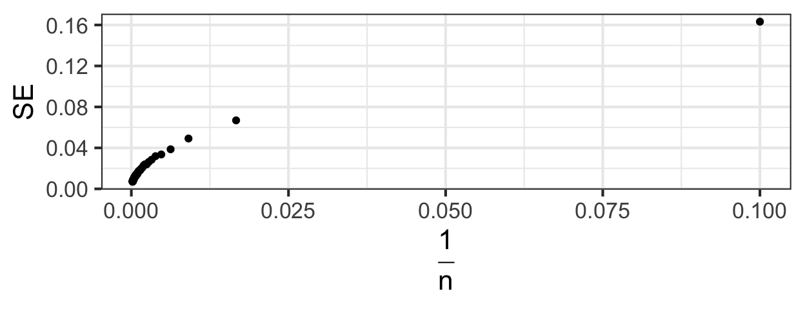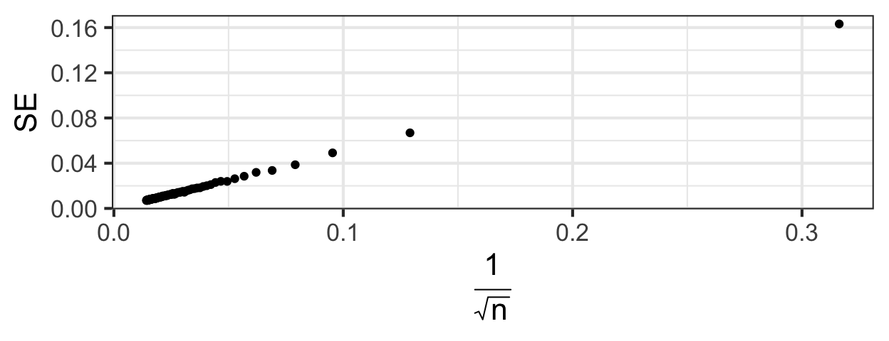
What can we conclude? As we expected, the SE gets smaller as \(n\) gets bigger. But the relationship is nonlinear. Specifically,
The SE increases with \(\frac{1}{\sqrt{n}}\).
So we should expect our formula for the SE for a proportion to have a \(\frac{1}{\sqrt{n}}\) in it.
How does the SE depend on p?
We’ll use bootstrap sampling distributions again to explore how the \(SE\) changes as \(p\) changes.
We will compute lots of bootstrap sampling distributions for a range of values of the proportion \(p\) between 0 and 1. For each one, we’ll compute a standard error (SE). Then, we’ll plot the SEs as a function of the \(p\)s.
You can click to expand the code below to see how it’s done, but your main goal is to see how the SE changes as a function of p.
Show code
ps <- seq(from=0, by = 0.01, to = 1)
for (i in c(1:length(ps))){
samp.dist <- do(1000)*rflip(n = 1000, prob = ps[i])
SE[i] <- sd(~prop, data = samp.dist)
}
gf_point(SE ~ ps, xlab = 'Proportion')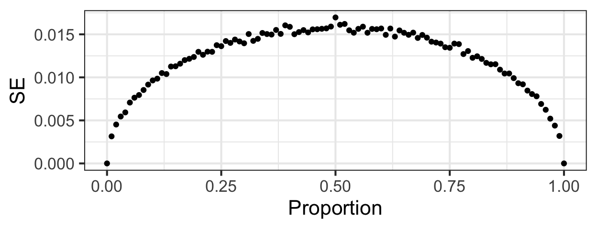
Interesting! The SE is largest when \(p\) is around 0.5, and smaller for \(p\) closer to 0 or 1. How could we include \(p\) in an expression for the SE in a way that would yield a pattern like this? (Click on to the next section to find out…)
SE for one proportion: Formula
Text book reference: IMS Ch. 6.1.2
The exploration we just finished has given us some idea of what we’d expect the formula for the SE for a proportion to look like. (Of course, the formula was derived analytically, not guess-and-checked via simulations, but the simulations are an easy way for us to get a sense of what to expect.)
Without further ado, according to the Central Limit Theorem for a proportion, if \(n\) is big enough, then the sampling distribution is normal with standard deviation
\[ SE = \sqrt{\frac{p(1-p)}{n}}\]
Whoa!!
Did you see what we just did there? This is pretty huge. How so?
(You can also watch directly on YouTube if you prefer, or view as static images: page 1, page 2, and page 3.)
Using your Power Wisely: CIs
As long as you know the sample size \(n\) and have an estimate of the proportion \(p\) (that “estimate” will be your sample stat \(\hat{p}\), if you’re doing a CI…), you can now estimate the SE for a CI without bootstrapping.
Just use
\[ SE = \sqrt{\frac{\hat{p}(1 - \hat{p})}{n}}\] to get the SE, then
\[\hat{p} \pm z^*SE\]
to get the CI. (Remember – from before – \(z^*\) is the multiplier for your chosen confidence level C, obtained from the boundaries of the central C% of the standard normal distribution.)
For reference,
| Confidence Level | z* |
|---|---|
| 80 | 1.282 |
| 90 | 1.645 |
| 95 | 1.96 |
| 97 | 2.17 |
| 98 | 2.326 |
| 99 | 2.576 |
Practice: Sunday Stalwarts
Let’s practice: At the start of the term, some Calvin students took the Pew Religious Typology quiz, and 16 of 37 respondents were classed as “Sunday Stalwarts.” Find a 99% confidence interval for the proportion Sunday Stalwarts at Calvin. (Note: this calculation assumes, perhaps incorrectly, that the class is a random sample of all Calvin Students with respect to their religious practice.)
You can use the R exercise chunk below as a calculator (and to check your work using the solution):
phat <- 16/37
SE <- sqrt(phat * (1 - phat) / 37)
CI <- phat + c(-1,1) * 2.58 * SE
CIWe are 95% confident the true proportion of Sunday Stalwarts at Calvin is between 22.2 and 64.3%.
Review: Bootstrap CI
You just found (via our new shortcut) that the 99% CI for proportion Sunday Stalwarts is (0.222, 0.643).
Can you verify that you get the same answer using a bootstrap?
The code below reads in the dataset survey containing the variable Pew_religious_type, then converts the variable values to all lower case. Use it to construct a 99% bootstrap CI and compare it to the shortcut one above. It should be approximately the same.
survey <- read.csv('https://docs.google.com/spreadsheets/d/e/2PACX-1vRYqo1UL_bZjD9G_Y7Ed9wBaNtEc2XlBHxrLJrb4w6iy7SnELVLxxSmfq_DK9gEqebdcWiUFI1z-WVN/pub?output=csv') %>%
mutate(Pew_religious_type = tolower(Pew_religious_type))survey <- read.csv('https://docs.google.com/spreadsheets/d/e/2PACX-1vRYqo1UL_bZjD9G_Y7Ed9wBaNtEc2XlBHxrLJrb4w6iy7SnELVLxxSmfq_DK9gEqebdcWiUFI1z-WVN/pub?output=csv') %>%
mutate(Pew_religious_type = tolower(Pew_religious_type))
pss <- prop(~Pew_religious_type == 'sunday stalwarts', data = survey)
bd <- do(1000)*rflip( n = nrow(survey), prob = pss)
cdata(~prop, data = bd, p = 0.99)survey <- read.csv('https://docs.google.com/spreadsheets/d/e/2PACX-1vRYqo1UL_bZjD9G_Y7Ed9wBaNtEc2XlBHxrLJrb4w6iy7SnELVLxxSmfq_DK9gEqebdcWiUFI1z-WVN/pub?output=csv') %>%
mutate(Pew_religious_type = tolower(Pew_religious_type))
pss <- prop(~Pew_religious_type == 'sunday stalwarts', data = survey)
bd <- do(1000)*prop(~Pew_religious_type == 'sunday stalwarts',
data = resample(survey))
cdata(~prop_TRUE, data = bd, p = 0.99)Practice: Better than Chimps
One more practice. Some other students took a Factfulness quiz, measuring their knowledge about the state of the world. (Take the quiz yourself if you want - it takes 5 minutes or less and is interesting.) 21 (of the 37 of us) scored 3 or lower (alas, worse than chimpanzees, that is, worse than expected by random guessing). Assuming (generously) that the class who took the quiz is random sample of all US college students, find a 90% CI for the proportion US college students who do worse than chimps on this test.
phat <- 21/37
SE <- sqrt(phat * (1 - phat) / n)
CI <- phat + c(-1,1) * 1.64 * SE
CIWe are 90% confident the true proportion chimp-dominated test-takers is between 0.43 and 0.70! (Kind of a lot, but the same is true all over the world.)
Using your Power Wisely: Tests
Text book reference: IMS Ch. 6.1
Think back to when we first learned randomization tests. To create a randomization sampling distribution, do you remember what we had to assume before we began?
Implications
Wait a second. If we are assuming \(H_0\) is true, then suddenly (and wierdly!), \(\hat{p}\) is no longer our best estimate of the true proportion \(p\).
\(H_0\) tells us exactly what the value of \(p\) is. And if we’re assuming that \(H_0\) is true for the purposes of the test, then what-\(H_0\)-says-p-is-supposed-to-be is our new best estimate of the population proportion \(p\)!
For short, we call the value of \(p\) specified in the null hypothesis \(p_0\) (which people usually read “p naught” or “p zero”).
So what?
If \(p_0\) is our best estimate of \(p\), that has implications for our estimate of the SE.
Instead of using the sample stat \(\hat{p}\) in the SE formula like we did for a CI, we should use \(p_0\).**
So if we are testing the hypotheses
\[H_0: p = p_0\] \[H_A: p \neq p_0\]
(where \(p_0\) is some numeric value we hypothesize the proportion to be), we should estimate the standard error of the sampling distribution according to:
\[ SE = \sqrt{\frac{p_0(1 - p_0)}{n}}\]
(And remember – the sampling distribution for a test will have a mean of \(p_0\)).
So we find a p-value by finding the area-under-the-curve that is more extreme than our sample stat \(\hat{p}\), for a normal distribution with mean \(p_0\) and standard deviation \(\sqrt{\frac{p_0(1 - p_0)}{n}}\).
Practice: Stalwarts again
Data from Calvin University in 2020 states that the population proportion of all Calvin students who are Christian Reformed Church members was 28.3%. Recall, in our survey, 16 of 37 students were “sunday stalwarts”. Let’s test whether the proportion stalwarts could be the same as the proportion CRC members.
Compute the p-value of this test and formulate your conclusion, then check your work in the next section.
n <- 37
phat <- 16/n
p0 <- 0.283
SE <- sqrt(p0 * (1- p0) / n)
2 * xpnorm(phat, mean = p0, sd = SE, lower.tail = FALSE)Conclusion: The p-value is pretty small - about 0.04. So we reject \(H_0\). Our data provide pretty strong evidence against the idea that the proportion Stalwarts is the same as the proportion CRC students. (Not surprising - it was a kind of silly idea to begin with! CRC members are not the only people in the world with regular dedication to religious practice!)
Review: Stalwart Randomization
As a review exercise, repeat the test you just did using a randomization test instead of the normal model (“shortcut” method).
rd <- do(1000)*rflip(n = 37, prob = 0.283)
2 * prop(~prop >= 16/37, data = rd)
gf_histogram(~prop, data = rd, binwidth = 0.05)While the p-value is not too different, it’s actually a bit larger from the randomization test than from the normal model – and just the other side of 0.05, so perhaps this would change our conclusion! This is because of a little bit of right skew in the randomization distribution. The randomization test solution is probably the better one - so perhaps we should actually conclude that we don’t reject \(H_0\). (This problem illustrates some of the strangeness that arises when you use a strict threshold like 0.05 to decide whether or not to reject the null…)
One Last Practice Problem: Classes
Last one (for this tutorial)! In 2019 779 first-year students came to Calvin (out of 3570 students total). Test whether the proportion Calvin first-years is now 1/4 (\(H_0: p = 0.25\)).
n <- 3570
p_hat <- 779/n
p0 <- 0.25
SE <- sqrt(p0 * (1 - p0) / n)
2 * xpnorm(p_hat, mean = p0, sd = SE, lower.tail = TRUE)The p-value is very small: about \(1\times10^{-5}\). We reject \(H_0\) and conclude that the proportion first-years is less than 25% (suggesting declining enrollment at Calvin).
Comprehension checks: why do we use \(p_0\) when computing the SE? And why is the first input to xpnorm() \(\hat{p}\), and the second input (mean) \(p_0\)?
Conditions: When Can You Use The Power?
We already noted that, for the normal model to work, the sample size must be big enough.
There are other conditions as well.
First (as always) we can’t make valid inferences about a population unless we have a representative sample from the population of interest.
In addition, this method requires that the observations (individual cases in the dataset) should be independent. This means there should be no important lurking variables; in other words, there’s nothing that would make some observations more similar than others. One more way of putting it: there’s no feature that helps you to predict one observation based on another.
To sum up, You can use the normal model for one-proportion data if:
- The sample is representative of the population of interest.
- The sample size is big enough (\(np \geq 10\) and \(n(1-p) \geq 10\)).
- The observations are independent.
Necessary Sample Size
One last cool trick you can do now.
For a CI for a proportion, we can now use
\[ \hat{p} \pm z^* SE\] We sometimes call \(z^*SE\) the “Margin of Error”. Expanded out, the Margin of Error (or MoE for short) is:
\[ MoE = z^*\sqrt{\frac{p(1-p)}{n}}\]
If we are planning a study and want to estimate some proportion to “within a margin of error of …” (1%, or 5%, or whatever you choose), we can now actually figure out how large a sample we would need to get that MoE!
We just have to solve the equation above for \(n\). Say we want to estimate the proportion of voters who will vote for Donald Trump in the 2020 presidential election, to within a 1% margin of error (MoE = 0.01), with 95% confidence.
We need to solve
\[MoE = 0.01 = 1.96\sqrt{\frac{p(1-p)}{n}}\]
Squaring both sides, we get
\[ 0.01^2 = 1.96^2 * \bigg{(}\frac{p(1-p)}{n}\bigg{)}\]
Then, isolating \(n\),
\[ n = 1.96^2 * \bigg{(}\frac{p(1-p)}{0.01^2}\bigg{)} \]
Now, all we need is a guesstimate for \(p\), and we get our necessary sample size! Sometimes we know enough about the situation to have a good guess for the likely value of \(p\). If we don’t, then the default is to use \(p = 0.5\) – this will make the SE as large as possible, maximizing the MoE. So the sample size needed to achieve a certain MoE with \(p = 0.5\) is conservative – if we are wrong and \(p\) is nowhere near 0.5, then our MoE will end up being smaller than the one we wanted to achieve.
So, for our Presidential election problem, we’d get
\[ n = 1.96^2 * \bigg{(}\frac{0.5(0.5)}{0.01^2}\bigg{)} = 9604\]
So, if we want to estimate the proportion who will vote Trump to within 1%, we should survey nearly 10,000 people.